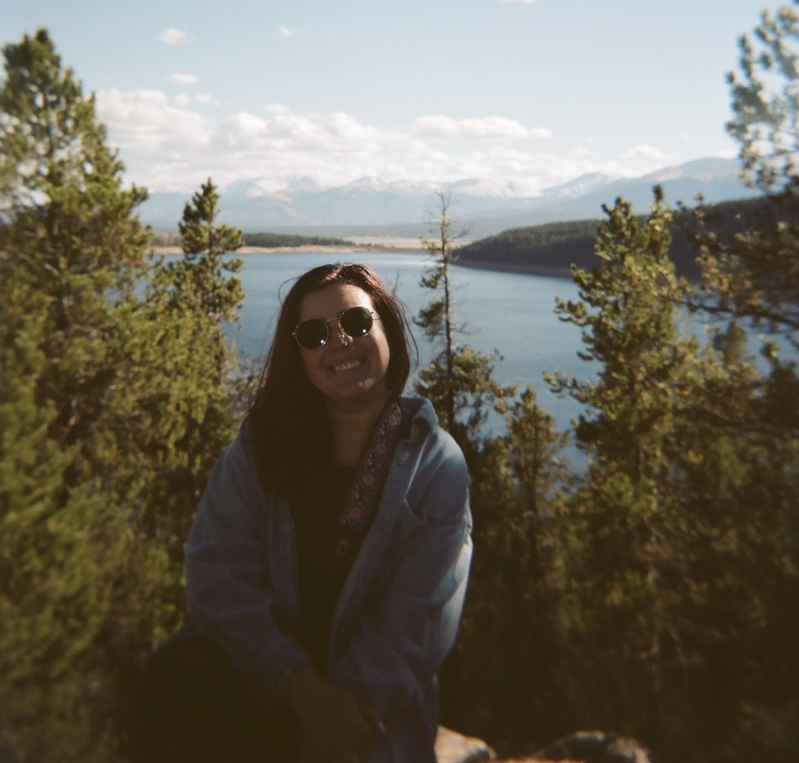
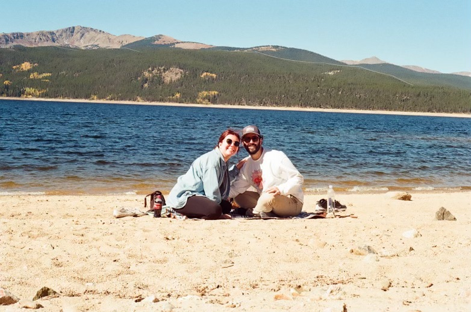

About Alex Goldstein
Alex has always been a storyteller—whether through the written word as an attorney or through the timeless beauty of film photography. A proud Texas girly, Alex was born and raised in the Lone Star State, where her love for capturing moments began with a special gift: her grandfather’s Canon T50. That camera, rich with history and family memories, became her creative outlet in high school, where she first experienced the magic of film photography and developing prints in the darkroom.
Alex went on to attend Trinity University in San Antonio, proudly embracing her Texas roots while pursuing higher education. But life had new adventures in store—her path led her to Colorado, where she attended law school at the University of Denver. In the heart of the Rockies, she built a new home, fell in love with the breathtaking landscapes, and met her husband, a Colorado native.
It was during a visit home to Texas for the holidays that Alex rediscovered her passion. Tucked away, waiting for her, was her Grandpa’s old Canon T50. She decided to bring it back to Colorado, unknowingly reigniting the creative spark that had been waiting to be rekindled. What started as a personal rediscovery soon evolved into a deep and consuming love for the art of film photography.
Recognizing her talent and passion, Alex’s family encouraged her journey by gifting her a darkroom intensive course at the Colorado Photographic Arts Center. There, under the guidance of expert photographers, she refined her skills in developing and printing film, mastering the process that had first inspired her years before.
Today, Alex is building a stunning portfolio of film photography—capturing joy, emotion, and unforgettable moments through the dying art of film photography. As an attorney, Alex has always been passionate about working with people. As a photographer, she uses that same passion to connect with those she photographs, preserving their most magical, fleeting moments with warmth, artistry, and authenticity.
She would love to work with you to capture your story—one timeless frame at a time.